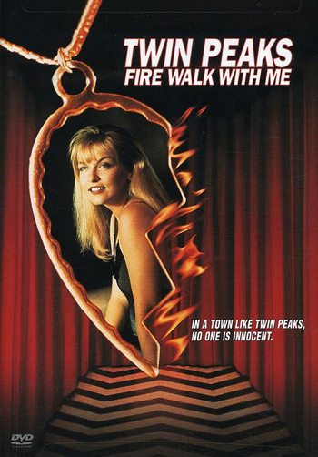

Fire Walk With Me
Written by David Lynch and Robert Engels
Directed by David Lynch
Release date: 3 July 1992 (France)

Federal Bureau of Investigation Regional Bureau Chief Gordon Cole sends agents Chester Desmond and Sam Stanley to investigate the murder of drifter and teenage prostitute Teresa Banks in the town of Deer Meadow, Washington. Desmond and Stanley view Teresa's body at the local morgue. They notice that a ring is missing from her finger and a small piece of paper printed with the letter "T" has been inserted under one of her fingernails. Later, Desmond discovers Teresa's missing ring under a trailer. As he reaches out to it, he is taken by an unseen force.
At FBI headquarters in Philadelphia, Cole and Agent Dale Cooper experience a brief vision of their long-lost colleague Agent Phillip Jeffries. He tells them about a meeting he witnessed involving several mysterious spirits - The Man from Another Place, Killer BOB, the Jumping Man, the Woodsman, Mrs. Chalfont and her grandson. Agent Cooper is sent to Deer Meadow to investigate Desmond's disappearance, but finds no answers.
One year later in Twin Peaks, high school homecoming queen Laura Palmer and her best friend Donna Hayward attend school. Laura is addicted to cocaine and is cheating on her boyfriend, the arrogant and ill-tempered jock Bobby Briggs, with the biker James Hurley. Laura realises pages are missing from her secret diary, and gives the rest of the diary to her friend, the agoraphobic recluse Harold Smith.
Mrs. Chalfont and her grandson appear to Laura. They warn her that the "man behind the mask" is in her bedroom. Laura runs home, where she sees BOB. She rushes outside in terror and is startled to see her father, Leland, emerge from the house. That evening Leland's behavior is erratic and abusive - he accusingly asks her about her romances, then tenderly tells her he loves her.
Laura has a dream about entering the Black Lodge. Cooper and the Man from Another Place appear in her dream. The Man from Another Place informs Cooper that "I am the arm", revealing his identity as MIKE's severed arm, and offers Teresa's ring to Laura, but Cooper tells her not to take it. Laura finds Annie Blackburn next to her in bed, covered in blood. Annie tells Laura to write in her diary that "The good Dale is in the Lodge and cannot leave". Laura sees the ring in her hand, but when she wakes up the next morning, it is gone.
The next evening, on her way to the Roadhouse to meet her drug connections and have sex with men, Laura meets the Log Lady who says, "When this kind of fire starts, it is very hard to put out. The tender boughs of innocence burn first and the wind rises and then ... all goodness is in jeopardy". Unexpectedly, Donna shows up. They all go to the Pink Room. Laura meets Ronette Pulaski and discusses the murder of Teresa Banks, which took place a year before, with her. Ronette says that Teresa was trying to blackmail someone and has asked what Laura's and Ronette's fathers looked like. When she sees a topless Donna making out with a stranger, a distraught Laura takes her home and begs Donna not to become like her.
The next morning, Philip Gerard, the one-armed man possessed by the repentant demon MIKE, in an attempt to warn Laura about her father and BOB, pulls up alongside Leland's car and, screaming at Leland, shows Teresa's ring to Laura. (NB: In the TV series Gerard's name is "Phillip Michael Gerard").
Leland recalls his affair with Teresa. He had asked Teresa to set up a foursome and invite some of her friends, but fled when he discovered Laura was among them. Teresa realised who he was and plotted to blackmail him, and he killed her to prevent his secrets from being revealed. Laura realises that MIKE's ring was the one from her dream, and was also worn by Teresa.
Laura wants more cocaine and Bobby arranges more supplies via Jacques Renault. The pick-up goes wrong and Bobby kills the drug courier - the corrupt Deputy Cliff Howard from the Sheriff's office.
Leland drugs Sarah Palmer with milk and a sedative so that he can be unobserved by her. Sarah has a strange vision of a white horse in her bedroom.
The next night, BOB comes in through Laura's window and begins to rape her, only to transform into Leland.
Distressed, Laura uses more cocaine and has trouble concentrating at school. When Bobby realises Laura is only using him to score cocaine, he breaks off their relationship.
Laura breaks up with James and goes to a cabin in the woods for an orgy with Ronette, Jacques and Leo. Leland follows her there and, after attacking Jacques and scaring away Leo, takes Laura and Ronette to an abandoned train car.
Laura asks Leland if he is going to kill her, but he transforms into BOB, who tells Laura that he intends to possess her. MIKE has tracked the BOB-possessed Leland to the train, but when Ronette tries to let him in, BOB beats her unconscious. Mike manages to throw in Teresa's ring. Laura puts it on, which prevents BOB from possessing her. Enraged, BOB stabs Laura to death. The BOB-possessed Leland places Laura's body, wrapped in plastic, in the lake.
As her corpse drifts away, the BOB-possessed Leland enters the Red Room, where he encounters MIKE and the Man from Another Place who announce they want their share of garmonbozia (pain and sorrow). BOB extracts the blood from Leland's soaked shirt and splatters it onto the floor of the Black Lodge. The Man from Another Place is then seen eating what looks like creamed corn from a spoon.
As Laura's body is discovered, Agent Cooper comforts her spirit in the Lodge and she sees an angel that had previously disappeared from her bedroom painting.